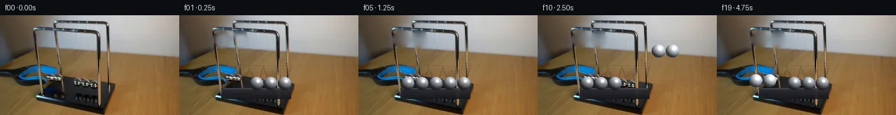

![首帧]()

Round 00
2026-11-06T07:41:23.357990+00:00像素候选变化代码 +364/−0inspection 更新
pixels 5f74c52fb021727e · code 770b35b8570df5d0
查看本轮 generate.py 真实 diff
--- previous/generate.py
+++ current/generate.py
@@ -0,0 +1,364 @@
+"""PixelWorld-Text case_0054: blue-black grabber releases two lifted metal
+balls of a five-ball Newton's cradle.
+
+Pipeline
+--------
+1. frame 0 is the supplied first_frame.png, copied byte-for-byte (never drawn).
+2. For frames 1-19 a static background is built once:
+ - the two held spheres and the vivid-blue jaw pads are removed with a
+ masked Laplace-diffusion inpaint seeded from surrounding measured pixels;
+ - a short dark cradle base, faint suspension stubs and the stationary
+ middle ball are added along the inferred rest row.
+3. Per frame, the four outer balls are composited at analytic swing positions
+ (nonlinear-looking eased pendulum; instantaneous 2-for-2 elastic exchange
+ at the bottom). Frame 1 keeps the photographic ball sprites and jaw so the
+ release starts from the true first frame.
+4. Saves pixels.npz, frames/00..19.png, inspection.png, index.html (via
+ artifact_io.save) and a transition_check.png contact sheet.
+
+All geometry/colour is documented in OBSERVATION.md and METHOD.md. The resting
+row is an oblique-projection inference (it is occluded in frame 0), not a
+direct measurement.
+"""
+from pathlib import Path
+import numpy as np
+from PIL import Image, ImageDraw
+
+import artifact_io
+
+CASE = Path(__file__).resolve().parent
+
+# ---------------------------------------------------------------- geometry --
+H, W = 144, 256
+F0_PATH = CASE / "first_frame.png"
+
+# held (frame-0) spheres ------------------------------------------------------
+HELD = [(61.0, 34.0), (87.0, 34.0)] # A, B centres, r ~= 12
+HELD_R = 12.0
+
+# rest row --------------------------------------------------------------------
+REST_Y = 98.0
+BALL_R = 10.0
+PITCH = 20
+CX = [70, 90, 110, 130, 150] # c0..c4 rest centre x
+REST = [(float(x), REST_Y) for x in CX]
+
+# side swing amplitudes (image-plane, oblique projection; see METHOD.md)
+THETA0 = np.deg2rad(70.0)
+AX, AY = 44.0, 54.0
+
+# ease schedule: drop progress s(f) for incoming pair ------------------------
+DROP_S = {1: 0.04, 2: 0.16, 3: 0.38, 4: 0.70, 5: 1.0}
+# right pair excursion a in [0,1] (0 at bottom, 1 amplitude)
+A_R = {1: 0, 2: 0, 3: 0, 4: 0, 5: 0.0,
+ 6: 0.35, 7: 0.72, 8: 0.95, 9: 1.0, 10: 0.92, 11: 0.55, 12: 0.0,
+ 13: 0, 14: 0, 15: 0, 16: 0, 17: 0, 18: 0, 19: 0}
+# left pair excursion a in [-1,0]
+A_L = {1: None, 2: None, 3: None, 4: None, 5: 0.0, # 1-4 = dropping
+ 6: 0.0, 7: 0.0, 8: 0.0, 9: 0.0, 10: 0.0, 11: 0.0, 12: 0.0,
+ 13: -0.30, 14: -0.66, 15: -0.92, 16: -1.0, 17: -0.90, 18: -0.58, 19: -0.26}
+
+
+# ------------------------------------------------------------- colour utils --
+def vivid_blue(rgb):
+ r, g, b = rgb[..., 0], rgb[..., 1], rgb[..., 2]
+ return (b > 140) & (r < 115) & (b - r > 60)
+
+
+def inpaint_laplace(img, hole, iters=700):
+ """Fill boolean `hole` in float HxWx3 image by Jacobi diffusion; every
+ non-hole pixel stays fixed. Operates on the hole bounding box + margin."""
+ out = img.copy()
+ ys, xs = np.nonzero(hole)
+ y0, y1 = max(ys.min() - 6, 0), min(ys.max() + 7, H)
+ x0, x1 = max(xs.min() - 6, 0), min(xs.max() + 7, W)
+ h = hole[y0:y1, x0:x1]
+ block = out[y0:y1, x0:x1].copy()
+ fixed = ~h
+ for _ in range(iters):
+ nb = (block[:-2, 1:-1] + block[2:, 1:-1] +
+ block[1:-1, :-2] + block[1:-1, 2:]) * 0.25
+ m = h[1:-1, 1:-1] & ~fixed[1:-1, 1:-1]
+ block[1:-1, 1:-1][m] = nb[m]
+ # feather second pass for the very centre
+ for _ in range(300):
+ nb = (block[:-2, 1:-1] + block[2:, 1:-1] +
+ block[1:-1, :-2] + block[1:-1, 2:]) * 0.25
+ m = h[1:-1, 1:-1]
… diff truncated; 277 more lines …